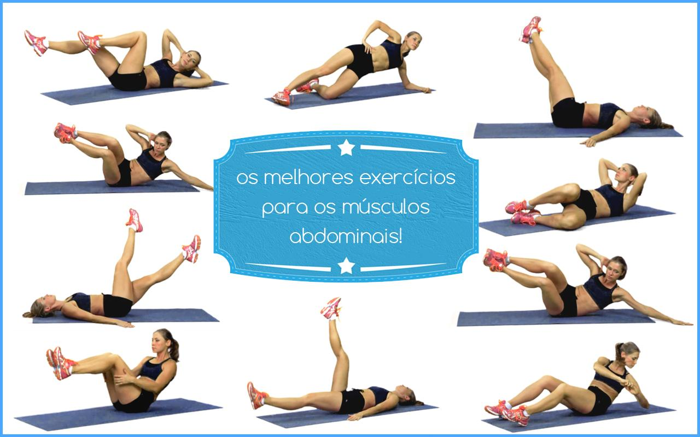

Uma alimentação saudável é aquela que garante o fornecimento de todos os nutrientes necessários para o funcionamento do nosso corpo. Investir em alimentos pouco processados e reduzir o consumo de gordurras, sal e açúcar são algumas das medidas que podem melhorar a sua alimentação.
Perda de peso. Redução do risco de câncer. Gestão de diabetes. Saúde do coração e prevenção do AVC. A saúde da próxima geração. Ossos e dentes fortes. Melhor humor. Memória melhorada.
perda de peso
Os benefícios da alimentação saudável · Alimentos que aumentam o sistema imunológico · Alimentos importantes para o funcionamento cerebral
